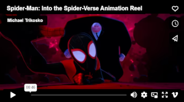

Spider man and the Diversity
Made by Elizabeth Crow
Thwip! With a single bite from a radioactive spider in the summer of 1962,
New York high school nerd Peter Parker was transformed into the world's favorite webslinging crimefighter,
with monthly bouts of four-color justice in what would become Marvel Comic's marquee series
— and a new way of writing the increasingly popular American cultural phenomenon of superhero comics.
But wait... We all know that, and what Spider Man has to do with diversity?
Well his creator once said:
- Stan Lee
- "I have always included minority characters in my stories, often as heroes. We live in a diverse society—in fact, a diverse world, and we must learn to live in peace and with respect for each other."
He also said that Spider Man is also great because anyone can be him, no matter what color, ethnicity or sex.
